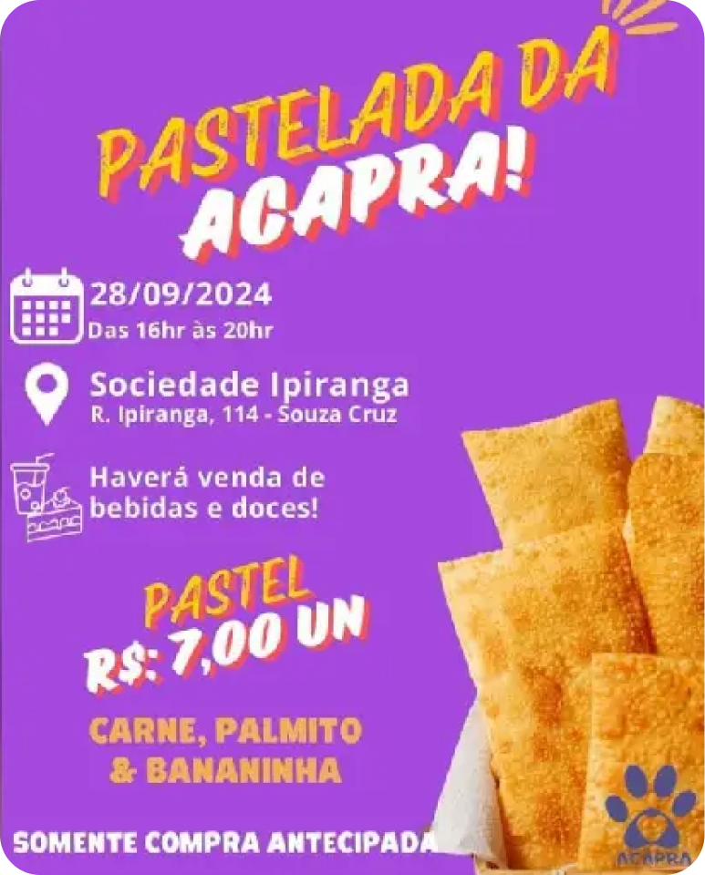

Acapra realiza bazar no dia 15/02 na escola EEF. Augusta Dutra de Souza
No dia 15 de fevereiro de 2025, a ACAPRA Brusque realizou mais um de seus tradicionais bazares na escola EEF. Augusta Dutra de Souza. O evento, que ocorreu das 8h às 13h, contou com a presença de muitos entusiastas e apoiadores da causa.

ACAPRA realizará Pastelada Solidária no próximo sábado
No próximo sábado (28), das 16h às 21h, acontecerá a Pastelada Solidária da ACAPRA,